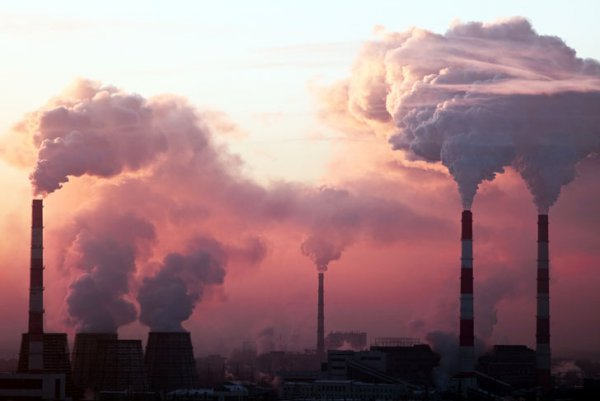

<link rel="stylesheet" href="style.css">
<section>
    <h2>About PROLINE AIR POLLUTION</h2>
    <p>
      Air pollution refers to the presence of harmful substances in the Earth's atmosphere. These pollutants, including gases, particulate matter, and chemicals, can be released from various sources, such as industrial emissions, vehicle exhaust, and burning of fossil fuels. Air pollution poses significant health risks and can have detrimental effects on the environment.
    </p>
    <p>
      The sources of air pollution are diverse, ranging from industrial activities, power generation, and transportation to residential heating, agricultural practices, and natural events like wildfires and volcanic eruptions. Pollutants can be categorized into primary pollutants, which are directly emitted into the atmosphere, and secondary pollutants, which form through chemical reactions in the air.
    </p>
    <p>
      The impacts of air pollution are widespread. It can lead to respiratory problems, cardiovascular diseases, and increased risk of lung cancer. Vulnerable populations such as children, the elderly, and individuals with pre-existing health conditions are particularly at risk. Air pollution also harms ecosystems, damages crops, and contributes to climate change.
    </p>
    <p>
      Addressing air pollution requires collective efforts at various levels. Governments, industries, communities, and individuals all play a role in reducing emissions and promoting cleaner air. Measures include adopting cleaner technologies, improving energy efficiency, implementing stricter regulations, promoting sustainable transportation, and raising awareness about the importance of clean air.
    </p>
    <p>
      This website aims to raise awareness about air pollution and provide information on its causes, effects, and prevention strategies. By understanding the impacts of air pollution and taking appropriate actions, we can work towards cleaner and healthier environments for ourselves and future generations.
    </p>
    
  </section>
  